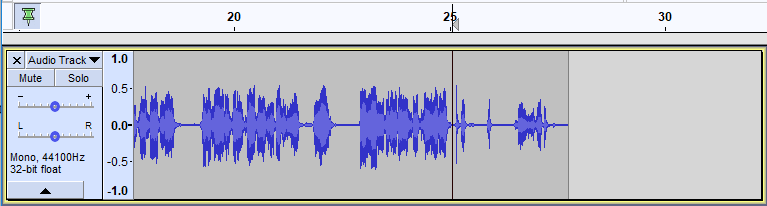
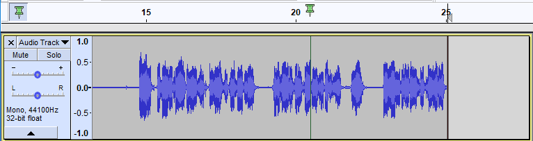
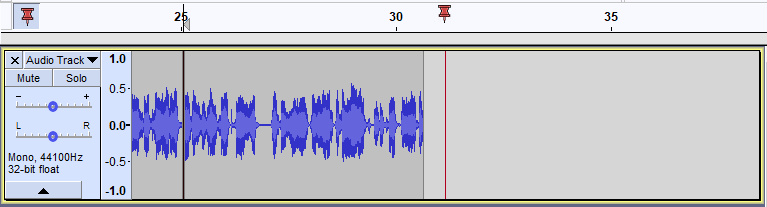

Punch and Roll Record
- This enables you to to correct errors easily during the course of a recording session.
- You can stop, back up over a mistake, and continue recording, resulting in one track that eliminates the errors and is properly timed, without the use of cutting, pasting, and clip-moving commands, or mixing of multiple tracks.
- You can do rough editing as you go, with minimal interruption of your performance (saving you the trouble and extra work of having to come back later and make the edits).
- Be aware that this is not punch-in patch repair - the repair recording carries on rolling (as the command name implies) until you specifically stop it.
Adjusting settings before you record:
|
Contents
- Record as usual, until you make a mistake
- Choose a splicing point
- Using Punch and Roll Record
- Final results
- Example
Record as usual, until you make a mistake
Begin recording as usual with the Transport toolbar Record button  , the menu command , or the keyboard shortcut R key.
, the menu command , or the keyboard shortcut R key.
If you make a mistake, stop recording with the Transport toolbar Stop button  or its shortcut Space.
or its shortcut Space.
| The Pinned Playhead/Recordhead can be repositioned in the Timeline by clicking on it and dragging in the Timeline. You may find that that a pinned position right of center will be more useful during Punch and Roll recording. |
Choose a splicing point
Select a position in the recording before the error by picking in the recording track. You must select a time within the recorded clip.
You may simply estimate the duration of the error, or guess by sight from the waveform (such as to find a pause between spoken words). Or you may find the Scrub Ruler or Timeline Quick-Play useful to find the right place by ear.
You may wish to use a selection and play it, extending or shrinking it to find an appropriate splicing point. If you select a time range, only the left edge is used as the splicing point - and please be aware that using Punch and Roll will then discard the selection as well as all audio following it.
| The Pinned Playhead may be preferable if you make small corrections frequently. Then you can choose your splicing points with less mouse movement. |
Using Punch and Roll Record
The command can be used to start Punch and Roll recording, but it is more easily done with the keyboard shortcut Shift + D. You can, if you wish, reassign this shortcut to another key or key combination of your choosing using Keyboard Preferences.
The Punch and Roll edit will:
- Delete the portion of the selected track after the splicing point. And note that this will include the selection if you have one
- Play the pre-roll audio (length as defined by your Pre-roll setting in Recording Preferences, default is five seconds).
- When the playhead reaches the splice point (now the end of the track) Audacity switches to record mode to enable you to make your correction and continue recording.
- The repair recording will roll until you stop it with the Stop button
 or its shortcut Space
or its shortcut Space
| Repeat your performance in unison with the pre-roll playback, and continue as the playhead moves beyond the end of the track. This is easier than trying to start just as soon as the recording starts. |
Still not satisfied?
If you are not satisfied with your re-take, simply stop recording and use  or or its shortcut Ctrl + Z. The track and selection will be restored as they were just before the Punch and Roll Record command began.
or or its shortcut Ctrl + Z. The track and selection will be restored as they were just before the Punch and Roll Record command began.
Or if you are happy with the existing splicing point and just want to make a further re-take then just use Shift + D to restart Punch and Roll.
Final results
- To avoid leaving an audible click at the splice point, Audacity applies a crossfade (whose length in milliseconds is specified in Recording Preferences). This means the original bad take isn't completely deleted, but a tiny portion of it is blended with the new take, so that the waveform has no discontinuities.
- A clip boundary is left behind at each splice point, so that you can easily find them again and listen to review your repairs.
- You can merge clips by clicking on the boundary.
- Or you can select the entire track and use to remove all clip boundaries at once.
Example
Which they the use Punch and Roll Record to repair straight away.
And note that the user is using the pinned play/recordhead, as suggested in the tip above.
Mistake
While recording the author/narrator makes a mistake just after 25 seconds, so they stop the recording and mark the splice point.
- 
Pre-roll playback
The user presses Shift + D and Audacity then starts the default five second pre-roll playback.Note that the audio, the mistake, to the right of splice point at 25 seconds has been deleted.
Observe that the green playhead shows during the pre-roll playback.
- 
Repairing the mistake
Once the pre-roll playback reaches the splice point Audacity switched to record mode.Observe that the red recordhead shows during the rolling repair recording.
This enables the user to continue with their recording, repairing the mistake as they go, with minimal interruption to their workflow.
- 